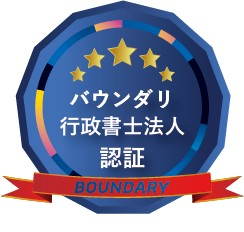

Surveying Technology for the Future
The site as it is today, captured as data.
SLAM・3Dガウシアンスプラッティング・AIなどの新しい空間把握技術を活かす、東北発の次世代測量カンパニーです。東北を中心に、ご相談は全国から承ります。
※ 測量法に基づく測量業者登録は申請中です。測量業務は、測量業者登録の完了後にお引き受けいたします。
Our application for registration as a surveying business under the Survey Act has been filed and is pending. Surveying work under the Survey Act, which includes the preparation of maps, will be offered once the registration is complete.
背景は生成AIで作成したイメージです（当社の計測データではありません）。Background: AI-generated image, not our measurement data.
技術・サービス一覧
3次元計測・測量・AI・映像を、ひとつの窓口でご相談いただけます。
3D measurement, surveying, AI and video — all from a single point of contact. Surveying work under the Survey Act, which includes the preparation of maps, will be offered once our registration as a surveying business is complete.
歩きながら周囲を3D点群（空間を無数の点の集まりとして記録したデータ）として取得する計測手法です。衛星測位（GPSなど）が届かない屋内・地下空間など、据置型（三脚に据え、場所を移しながら1か所ずつ計測する機器）では手間のかかる空間を対象としています。歩いて記録する方式は時間を短くできる一方、点の位置の確からしさは据置型に及びません。用途に合うかどうかを事前にご説明します。当社は2026年9月にハンディ型のSLAM計測機器を導入しました。計測のご相談・お見積りを承ります。まずは、計測したい場所とデータの使い道をお聞かせください。
複数の写真から、見たままの質感で3D空間を再現する技術です（3DGS＝3Dガウシアンスプラッティング）。建物・施設・展示物のデジタル保存や、Web上での内覧・展示にご利用いただけます。
測量士（国家資格）を持つ代表者が担当します。測量業務は、測量法に基づく測量業者登録の完了後にお引き受けいたします。それまでは、ご相談と進め方のご提案をお受けしております。境界の確定と登記の手続は土地家屋調査士の職域のため、当社では行いません。
日々の書類作成・データ整理・報告書づくりに、AIをどこまで使えるかをご一緒に整理します。当社自身が社内業務をAIで動かしており、その運用手順をそのままご提案の土台にしています。
3Dデータと現地で撮影した写真・映像を素材に、会社紹介・工事記録・施設案内の動画を制作します。Instagramの投稿設計から日々の運用まで、撮影と発信をまとめてご相談いただけます。
「どの技術が合うのかわからない」という段階で構いません。ご要望と現地の状況をうかがい、進め方と概算をお伝えします。ご相談だけでも費用はいただきません。
Not sure which method fits your project? Tell us the situation and we will suggest an approach and a rough estimate — consultation is free of charge.
ファルコンが選ばれる4つの理由
SLAM（歩きながら周囲を三次元で記録していく計測方式）・3DGS（写真から実写のような三次元空間を再構成する技術）について、機材の導入から現場での運用、データ処理までを、外部に委託せず、代表者が一人で行います（ハンディ型の計測機器は、2026年9月に導入しました）。
測量士（国家資格）・二等無人航空機操縦士（国家資格／無人航空機操縦者技能証明）・AI活用の三つを、代表者が一人で担います。窓口が一つなので、現地調査からデータ納品まで話が早い。
仙台を拠点に、東北の現場を中心に活動しています。地元の現場感覚と三次元計測の技術を組み合わせ、地域の課題解決に貢献します。東北以外の地域からのご相談も承ります。
小規模だからこそのスピード感と柔軟な対応が強み。お客様の現場に合わせたカスタマイズ提案で、最適なソリューションをご提供します。

ドローンの飛行許可・承認の申請や運用ルールについては、許認可申請を専門とするバウンダリ行政書士法人（東京・仙台・名古屋／代表社員 佐々木慎太郎）と顧問契約（ライトプラン）を締結し、専門家に相談できる体制を整えています。2026.08
For flight permissions and operating rules, we work under an advisory agreement (Light Plan) with Boundary Gyoseishoshi Lawyer Corporation (Tokyo / Sendai / Nagoya), a firm specialising in drone-related permit filings in Japan.
※ 上記バッジは、同法人が顧問サービスのご利用者に交付している認証バッジです。／ The badge above is issued by the firm to users of its advisory service.
主な対応業種・お客様
施工前後の現況の記録、出来形の確認、土量の算出。3D点群データで現場管理をお手伝いします。測量業務は、測量業者登録の完了後にお引き受けいたします。
配管・設備のSLAM計測によるデジタルツイン構築。改修・設計の検討に使える、現況をそのまま記録した3Dデータをご提供します。
3DGS技術による、写真の質感をそのまま残したデジタルアーカイブ。かけがえのない空間を未来に残すお手伝いをします。
公共インフラの維持管理、防災マップづくりの基礎となる三次元記録、都市計画のご検討の支援。測量業務（地図の調製を含みます）は、測量業者登録の完了後にお引き受けいたします。
お引き受けの流れ
当社は2026年5月に設立した会社で、掲載できる完了案件はまだありません。
ご検討の材料として、お引き受けの流れと、各段階でお伝えする内容を先に公開します。
Falcon was founded in May 2026 and has no completed projects to show yet.
Instead, we set out here how a project runs with us, step by step.
メールでご連絡ください。目的・場所・ご希望の時期をお聞かせいただければ、当社でお引き受けできる範囲と進め方をお返しします。「どの方法が合うのか分からない」という段階で構いません。 Tell us the purpose, the location and your preferred timing by e-mail. We reply with what we can do and how we would proceed.
対象の広さ・障害物・立入の条件を確認します。近隣であれば現地でお会いし、遠方の場合は写真や図面をもとに整理します。そのうえで、作業内容・お渡しするもの・費用をお見積りとして書面でお示しします。 We check the size, obstacles and access conditions of the site, then issue a written quotation covering the work, the deliverables and the cost.
現地で計測・撮影を行います。建物の内部や設備は、歩きながら記録する三次元計測で対応します（機器は2026年9月に導入しました）。土地の測量を伴う業務は、測量業者登録の完了後にお引き受けいたします。 Indoors we use handheld 3D scanning (the equipment was introduced in September 2026). Surveying work under the Survey Act, which includes the preparation of maps, will be offered once our registration as a surveying business is complete.
取得したデータを、お使いになる形に整えます。点群データ（空間を無数の点の集まりとして記録したデータ）の整理、図面やオルソ画像（ゆがみを補正した真上からの画像）の作成、動画の編集まで対応します。 The acquired data is processed into the form you will actually use — point clouds, drawings, orthophotos and edited video.
仕上がりをご確認いただきます。見え方・範囲・記載内容にご要望があれば、この段階で調整します。どこまでを調整の範囲とするかは、お見積りの時点で書面に明記しておきます。 You review the result. Adjustments are made at this stage; the scope of revision is stated in the quotation in advance.
データはオンライン、または記録媒体でお渡しします。お預かりしたデータと当社控えの保管期間は、契約の時点で取り決めます。納品後のご質問にもお答えします。 Deliverables are handed over online or on physical media. Retention periods for your data and our own copies are agreed in the contract, and we stay available afterwards.
当社は2026年5月1日に設立いたしました。
実績は、案件の完了後、お客様から書面でご了解をいただいたものだけを掲載します。
現場や所在地が特定される情報、お預かりした図面・データそのものは掲載しません。
Falcon was founded on 1 May 2026.
Project cases are published only after completion and only with the client's written consent.
We do not publish anything that identifies a site, nor the drawings and data entrusted to us.
最新情報・お知らせ
お問い合わせ
サービスに関するご質問、お見積もり依頼、現地調査のご相談など、
まずはお気軽にメールにてご連絡ください。
For inquiries, quotes, and consultations, please feel free to contact us.
※ 平日 9:00〜18:00 / Weekdays 9:00–18:00 JST
※ 測量法に基づく測量業者登録は申請中です。測量業務は、測量業者登録の完了後にお引き受けいたします。
Our application for registration as a surveying business under the Survey Act has been filed and is pending. Surveying work under the Survey Act, which includes the preparation of maps, will be offered once the registration is complete.